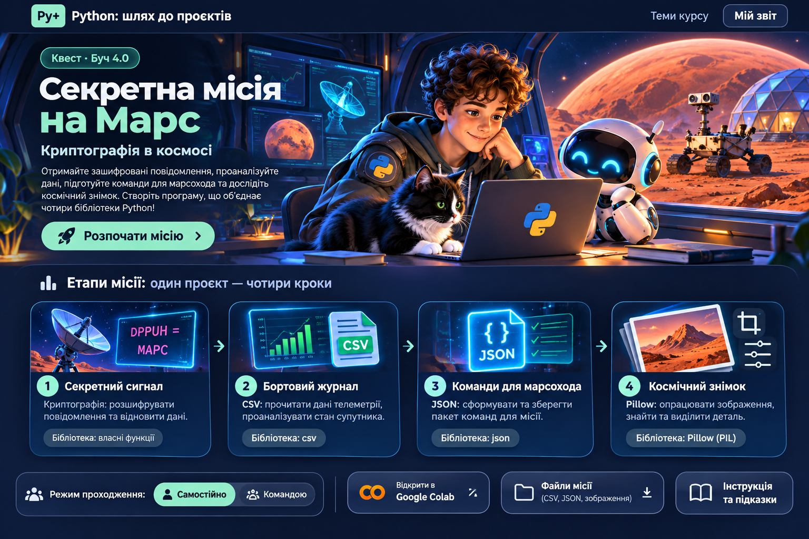

Теми 13–16 · один наскрізний проєкт
Врятуйте марсохід!
Буч отримав зашифрований сигнал із Марса. Щоб допомогти марсоходу, потрібно зібрати програму з чотирьох модулів: космічний сигнал, шифр, зображення й файли CSV/JSON.
Код редагуємо тут, запускаємо в Google Colab. Симулятори працюють безпосередньо в браузері.

Підготовка екіпажу
У команді можна працювати в кімнаті Teams: один керує зі смартфона, решта обговорюють усі рішення.
0 XP300 кредитів
1. Оберіть маршрут
2. Дослідіть ситуацію
3. Доповніть програму Python
Змініть позначений рядок. Перевірка в квесті навчальна; для справжнього запуску використовуйте Colab.